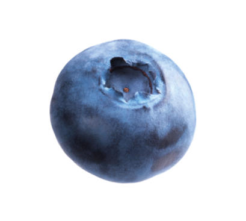
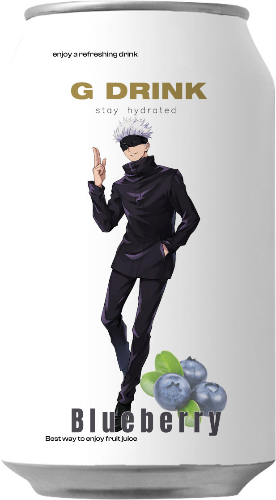
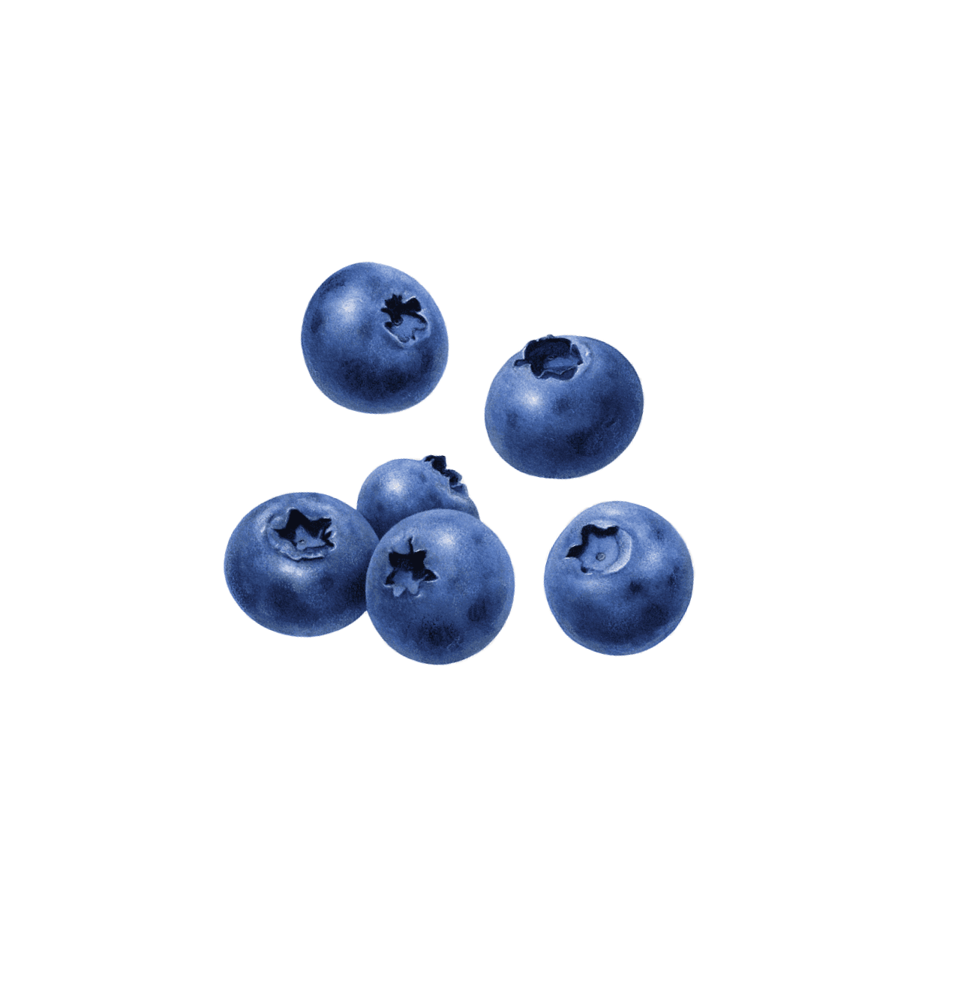
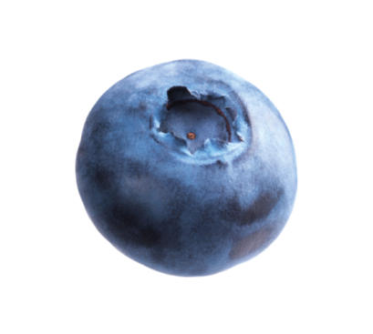
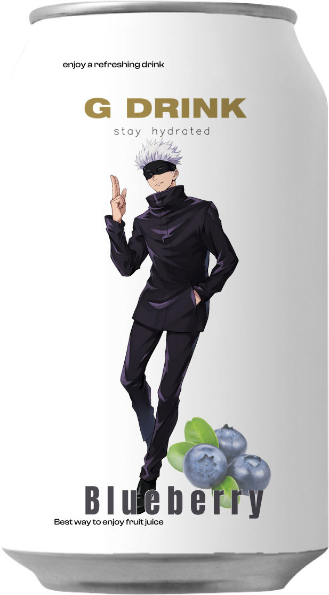
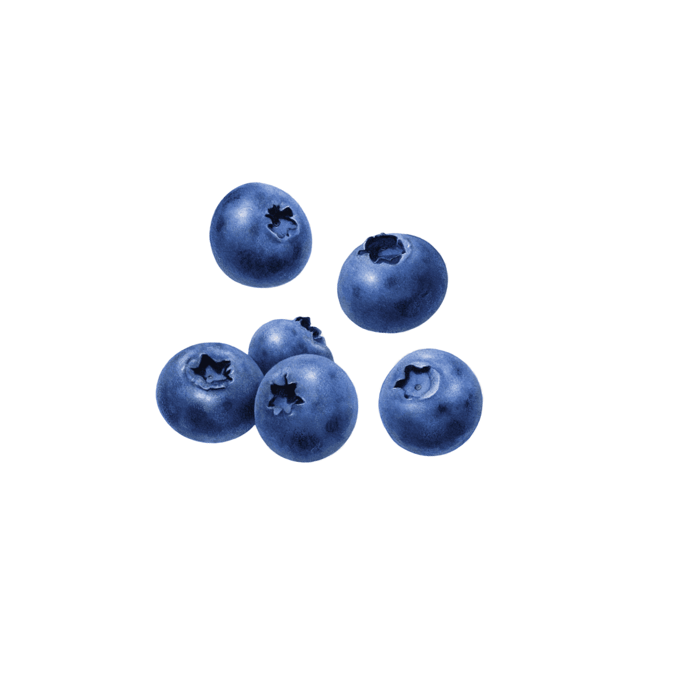

Introducing "Gojo's Blueberry Bliss" – a delicious drink inspired by Gojo Satoru's amazing powers, including the cool-sounding "Infinity Void" move. With every sip of this blueberry-flavored elixir, you're not just enjoying a tasty drink but also unlocking Gojo's special abilities like Red, Blue, Purple, and the super cool Infinity Void.
The bright blue color represents the limitless fun packed into each sip, just like Gojo's incredible powers. "Gojo's Blueberry Bliss" is your ticket to a taste adventure that brings the magic of Jujutsu Kaisen to life.
So, take a sip, enjoy the flavors, and let "Gojo's Blueberry Bliss" be your way to experience something extraordinary. Cheers to a shorter, sweeter journey into the mystical world of Gojo!